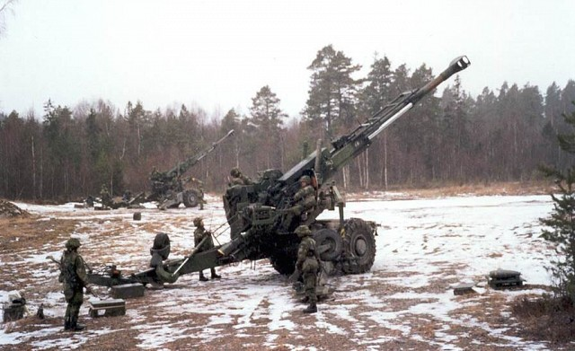

Service History
- Entry into service :
The Bofors FH-77B Howitzer entered service with the Indian Army in 1986 following a purchase of 410 units from Sweden.
It was India’s first modern towed artillery system, designed to enhance long-range fire support capabilities, particularly in high-altitude regions.
- Mjaor Operation :
The Bofors howitzer was famously deployed during theKargil War of 1999, where its accuracy and rate
of fire proved instrumental in dislodging enemy positions in high-altitude environments. It was also deployed along the Line of Control (LoC) and in various counter-insurgency operations.
- Retirement:
The FH-77B remains in service with the Indian Army. Though aging, it continues to be operational due to upgrades
and overhauls, as well as new indigenous developments like the Dhanush howitzer, which is based on the Bofors design.
Technical Specifications
- Weight : Approximately 11 tons.
- Caliber : 155mm, capable of firing various types of ammunition, including high-explosive, smoke, and illumination rounds.
- Rate of fire : Capable of firing up to 3 rounds in 13 seconds (burst mode), or 2 rounds per minute in sustained mode.
- Mobility :
Towed by vehicles; however, it features an auxiliary power unit that allows it to move short distances independently, enhancing flexibility in rugged and mountainous areas.
- Range : Maximum effective range of up to 30 km with standard ammunition, extendable with specialized rounds.
- Crew : Operated by a crew of six personnel, with semi-automatic loading for faster firing.
Historical Significance
The Bofors FH-77B Howitzer revolutionized India’s artillery capabilities, providing long-range, high-impact fire support in diverse terrains. Its mobility and high rate of fire made
it especially valuable in high-altitude conflict zones like Kargil, where its ability to rapidly deliver concentrated fire significantly contributed to India’s success. Despite initial
controversy surrounding its acquisition, the Bofors howitzer has left a lasting legacy in Indian artillery history.
Notable Missions
- Kargil War (1999): The Bofors howitzer was crucial in the Kargil conflict, where it was used to target well-entrenched positions on high-altitude ridges.
The howitzer’s range, accuracy, and rate of fire allowed Indian forces to deliver sustained fire on enemy bunkers and supply routes, greatly aiding in reclaiming occupied territories.
- Border Deployment and High-Altitude Patrols:Since its induction, the Bofors has been deployed in high-altitude regions along the Line of Control
(LoC) in Jammu and Kashmir, where it has served as a deterrent and support asset for Indian infantry and armored units in the challenging mountainous terrain.